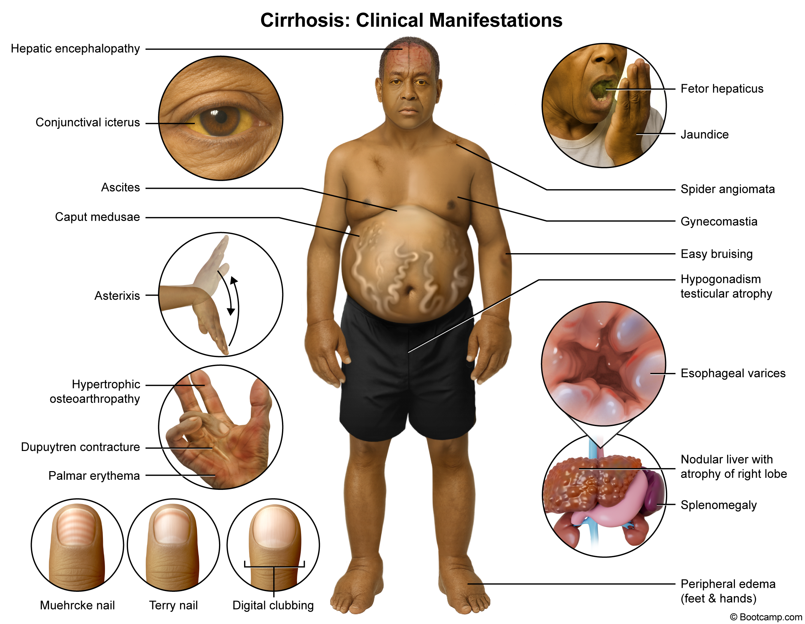
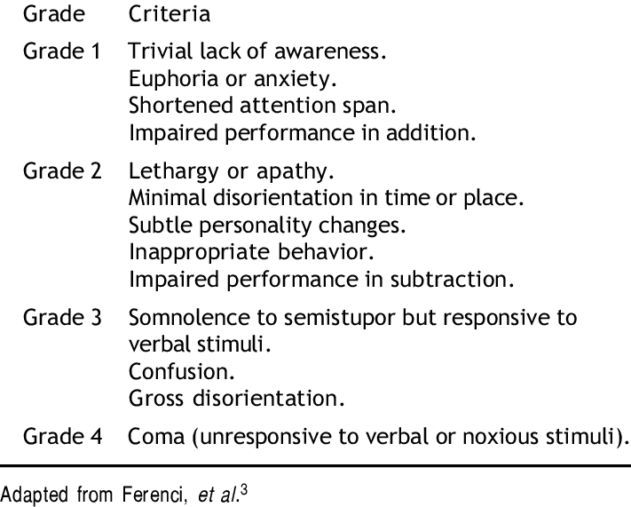

CLD stigmata checklist
Deeply focus on points in bold.

WIPPER and the intro
General look of the patient
Vital signs
Hands
Starting with a quick glance at the nails:
[Mention Terry’s Nails, type of apparent leukonychia, characterized by ground glass opacification of nearly the entire nail]

Moving to the still-hand examination:
Palpation + tests:
Face
Eyes
Cheeks & Lips
Mouth
Neck
Nothing specific to CLD stigmata.
Chest
Abdominal Exam
Inspection – Foot of the Bed
Inspection – Right Side
Palpation & Percussion
Tips:
- Palpate and percuss organs systematically with respiration.
- Normal liver span: 6–12 cm.
- Spleen → percuss ribs 9–11 (normally dull, non-ballottable).
Liver – Palpation
Liver – Percussion
Spleen – Palpation
Spleen – Percussion
Ascites Assessment
Three tests:
- Shifting dullness
- Percuss midline → flank dullness
- Roll patient (wait 15s) → no shifting dullness
- Percuss midline → flank dullness
- Fluid thrill
- Hand on midline, flick other side
- No transmitted thrill
- Hand on midline, flick other side
- Succussional splash (mention only)
Auscultation
Ending the Station
Hepatic Encephalopathy
We assess grade using West Haven Criteria:

THE END